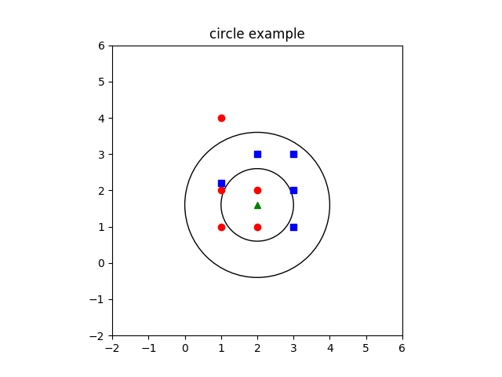

matplotlib 是python最著名的绘图库，它提供了一整套和matlab相似的命令API，十分适合交互式地进行制图。而且也可以方便地将它作为绘图控件，嵌入GUI应用程序中。
它的文档相当完备，并且 Gallery页面 中有上百幅缩略图，打开之后都有源程序。因此如果你需要绘制某种类型的图，只需要在这个页面中浏览/复制/粘贴一下，基本上都能搞定。
本篇作为matplotlib的入门介绍，将较为深入地挖掘几个例子，从中理解和学习matplotlib绘图的一些基本概念。
实例一 画圆
import matplotlib.pyplot as plt
circle1 = plt.Circle((2, 1.6), radius=1, fill = False)
#产生一个原点为（2，1.6），半径为1的圆
circle2 = plt.Circle((2, 1.6), radius=2, fill = False)
#产生一个原点为（2，1.6），半径为2的圆
plt.gca().add_patch(circle1)
#将圆1添加到坐标轴上
plt.gca().add_patch(circle2)
plt.axis('scaled')
#等比例缩放
plt.plot([1,1,2,2,1], [1,2,1,2,4], 'ro')
#画出（1，1），（1，2）等点，第一个方括号是x轴参数，第二个是y轴参数，‘ro’是红色圆点
plt.plot([3,3,3,2,1], [1,2,3,3,2.2], 'bs')
#‘bs’是蓝色
plt.plot([2], [1.6], 'g^')
plt.axis([-2,6,-2,6])
plt.title('circle example')
plt.show()
结果如下：
